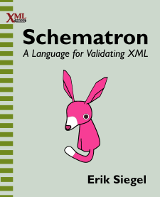
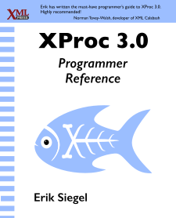
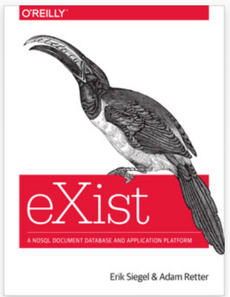

Publicaties
- Schematron - A language for validating XML
- XProc 3.0 - Programmer Reference
- eXist - A NoSQL Document Database and Application Platform
- Artikelen op XML.com
- Whitepapers:
Schematron - A language for validating XML
|
 |
Schematron is een validatie taal voor het controleren van XML documenten tegen business rules. Het biedt aanzienlijk meer mogelijkheden hiervoor dan de meer "klassieke" validatie talen, zoals Document Type Definitions (DTD), W3C XML Schema en RELAX NG. XML documenten kunnen gecontroleerd worden op regels die moeilijk, zo niet onmogelijk, te implementeren zijn met de andere validatietalen. Het boek is geschreven voor zowel XML-kenners/programmeurs als mensen die minder ervaren zijn. Voor lezers met weinig ervaring met XML, of beperkte programmeerervaring, zijn er introducties over twee belangrijke onderwerpen: XPath en XML namespaces. Het is uitgegeven door XML Press in 2022. |
XProc - 3.0 Programmer Reference
|
 |
XProc is een programmeertaal voor het verwerken van XML, JSON en andere soorten documenten in pipelines. Verwerking vindt plaats door het koppelen van losse stappen zoals conversies tot één geheel. Documentstromen kunnen worden gesplitst en samengevoegd. Toepassingen zijn vooral te vinden in vakgebieden met een complexe document verwerking, zoals uitgeven, documentatie en XML gebaseerde standaarden. Het is uitgegeven door XML Press in 2020. |
eXist - A NoSQL Document Database and Application Platform
|
 |
Samen met Adam Retter heb ik een boek geschreven over het XML database en applicatie platform eXist. Het is uitgegeven door hun O'Reilly in 2014. |
Artikelen op XML.com
Op de website XML.com zijn de volgende artikelen van mijn hand verschenen (Engelstalig):
- Schematron Query Language Binding and XSLT
- An Introduction to XProc 3.0
- XProc 3.0 - Connecting steps using ports
- XProc 3.0 - Strategies for merging documents
Whitepaper: Content Packaging met Cocoon
Content Packaging is het proces om bij elkaar behorende content samen te pakken in een zip file. Deze wordt voorzien van een beschrijvend bestand (het manifest), zodat de ontvangende partij kan zien wat het krijgt. Vooral bij educatieve content is dit een veel gebruikt fenomeen. Dit artikel geeft een overzicht van de praktijkervaringen rondom het realiseren van een Content Packaging applicatie met het Java open source framework Cocoon. Dit blijkt een uitermate geschikt platform hiervoor te zijn.
Dit artikel blijft op overzichtsniveau en gaat niet de technische diepte in. Kennis van Cocoon is niet noodzakelijk.
Whitepaper: Medium neutrale contentproductie
Het is niet eenvoudig om met behulp van XML-technologie educatieve content te produceren. We beginnen vaak met auteurs die weinig affiniteit met IT hebben. Daarna moet de content gesplitst en verrijkt worden om het op eenvoudige manier te kunnen hergebruiken. Aan het einde wordt er hoge kwaliteit PDF-uitvoer verwacht. Het is lastig om hiervoor een productiestraat te ontwerpen en het aan de praat krijgen ervan is nog lastiger.
Waarom is dit zo ingewikkeld? Er zijn XML-editors, contentmanagementsystemen en PDF-generatoren bij de vleet. Gewoon de zaak aan elkaar knopen en klaar is Kees.
Helaas leert de werkelijkheid dat het niet zo eenvoudig is. XML-technologie is op dit moment vooral gericht op relatief simpele applicaties als websites of eenvoudige folioproducties. Men gaat er vrijwel standaard van uit dat de gebruikers voldoende IT-kennis hebben en weten wat een XML-tag is. Deze whitepaper is geschreven vanuit de, soms onplezierige, ervaringen met het maken van educatief materiaal met behulp van XML-technologie. De paper bevat een analyse van de problemen en de ideeën die hieruit voort zijn gekomen. De whitepaper is geschreven voor een presentatie gehouden op de XML Europe 2004 Conferentie (Amsterdam, april 2004) en is daarom alleen beschikbaar in het Engels.
Whitepaper: Schema's voor een XML-standaard
Als bedrijven onderling formeel moeten communiceren, zullen ze dit proces vroeger of later willen automatiseren. In de meeste gevallen is dit een gecompliceerde en langdurige kwestie. Men moet het over veel dingen eens worden: functionaliteit, formaat, inhoud van de berichten, de technische details rondom het verzenden en ontvangen, de juridische kant, etc. Een B2B (Business to Business) communicatieproces opzetten is over het algemeen niet eenvoudig.
Nog niet zo lang geleden werden dit soort van B2B communicatie uitgevoerd met behulp van EDI. Tegenwoordig wordt hiervoor XML gebruikt.
Deze whitepaper bevat een case-studie over een kleine maar belangrijke stap in het ontstaan van een standaard in de advertentiewereld: het ontwerpen en bouwen van XML-schema's voor berichten. Vanwege de omvang van de standaard erg groot was, lag het handmatig maken van deze berichten niet voor de hand. Het zou vrijwel onmogelijk zijn alle details, zoals veldtypen en -omvang, volledig correct te krijgen. Echter, inconsistenties tussen standaard en berichten was niet acceptabel...
In deze whitepaper/case-studie staat beschreven hoe het proces verloopt van de standaard naar de XML-schema's. De whitepaper is Engelstalig.
Whitepaper: Opslag en uitwisseling van metadata
Metadata is overal: iedereen die wel eens een boek in een bibliotheek aan de hand van de catalogus heeft opgezocht, heeft met metadata gewerkt. Metadata zijn gegevens óver dingen. Metadata beschrijven, identificeren en/of classificeren dingen zodat ze makkelijker terug te vinden zijn of eenvoudiger kunnen worden ingedeeld.
De educatieve sector is een branche waarin metadatering van materiaal erg belangrijk is. Er zijn binnen deze sector diverse initiatieven om metadata te standaardiseren, waarvan IMS (zie www.imsproject.org) op dit moment de belangrijkste is.
Het implementeren van metadata volgens de internationale standaarden is echter een frustrerende bezigheid. Dat het belangrijk is om standaarden te gebruiken, spreekt voor zich. Er blijven alleen altijd velden over die niet in de standaarden passen en alleen met e rare trucs of met behulp van oneigenlijke velden onder te brengen zijn. Aan de andere kant zijn er veel overbodige velden die wel ingevuld moeten worden. Door de complexiteit kost de software eromheen ook nog eens erg veel geld en moeite. En uiteindelijk is het dan nog maar de vraag of met al deze afwegingen en keuzes de gewenste compatibiliteit tussen systemen inderdaad wordt bereikt.
Deze frustraties hebben geleid tot een poging om een flexibeler systeem voor metadatering te verzinnen. Een niet monolithisch, minder log en vooral makkelijker aan te passen manier om metadata uit te wisselen en te gebruiken, zonder de standaarden uit het oog te verliezen. Daarover gaat deze whitepaper.
Whitepaper: Workshops en leuker vergaderen
Dit heeft niets met Content Engineering of XML te maken. Maar... workshops zijn in een adviespraktijk een belangrijk en krachtig middel om informatie te vergaren en commitment te verkrijgen.
Volgens boeken en andere geschriften over workshops is een workshop een keurig geregisseerd en voorspelbaar gebeuren. Een workshop verloopt netjes volgens de fasen voorbereiding, divergentie, convergentie, afronding. Iedere fase kent eigen methoden. Binnen de tijd ligt er het gewenste resultaat.
Ook de zaken er om heen zijn goed geregeld: natuurlijk is er een duidelijke probleemstelling en is het doel wel omschreven. Er is een betrokken probleemhouder die meedenkt en zijn rol met verve speelt. De workshop vindt plaats in een hotel, ergens zo ver weg op de hei dat zelfs mobiele telefoons niet werken. En, uiteraard, is er een aparte facilitator die de groep professioneel door het proces loodst zonder zich er inhoudelijk mee te bemoeien.
Helaas is de praktijk zelden of nooit zoals hierboven geschetst. Uiteraard zullen er wel workshops worden gehouden, waarbij er tijd en geld genoeg is om in een duur hotel te gaan zitten en een minstens even dure facilitator te betalen, maar in werkelijkheid is dat zelden of nooit het geval.
Wat moet er gebeuren om de kloof tussen droom en werkelijkheid te dichten? Wat kan een amateur facilitator maar beter wel én niet doen? Welke workshoptechnieken maken vergaderingen leuker? Hierover gaat deze whitepaper.
Meer Xatapult:
Aanvullende websites:
Boeken:
Artikelen:
Aanvullende XML informatie:
Hobby